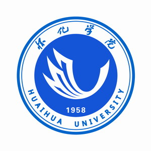

|
Guanjie Wang(王冠杰)
|
|
怀化学院计算机与人工智能学院
网络空间安全基地
计算机科学与技术专业
E-mail: wgjsci@gmail.com
联系方式/微信：TheGolenScale
|
个人简介
在我本科阶段的学习中，除了学习本专业的课程外还对逆向工程和区块链也进行了深入学习，并且取得了一部分成就，也学习了数学建模知识丰富了自己的视野，发表了论文。
研究经历
我的研究兴趣包括:
人工智能与机器学习 区块链技术与逆向工程 数学建模与软件开发
出版中
Guanjie Wang., Yiquan Wang., Wei Li*. Research on Travel Route Planing Problem. ICDA 2024 (EI; First author)
Note: *通讯作者
科研项目
研究经历1：基于贪心算法的路径规划问题研究————第五届华数杯数学建模国家级二等奖, 2024.7
主要内容：提出了一种基于贪心算法的路径规划算法。首先使用PCA方法对城市评价指标进行降维，提取关键主成分，并使用KMO和TOPSIS算法对数据进行降维。其次，对于未通过KMO测试的数据集，将使用熵权法和TOPSIS法进行综合评估。最后，基于贪婪算法进行路径优化
关键词：数学建模; 贪心算法；路径规划
投稿至：ICDA 2024（EI; first author）（出版中）
项目地址:GitHub/RoutePlaning_GreedyAlgorithm
教育经历
本科： 怀化学院 计算机与人工智能学院--网络空间安全基地--计算机科学与技术专业 , 2021.09-2025.06
竞赛荣誉
2024年第五届华数杯全国大学生数学建模竞赛国家级二等奖, 2024.08
2023年湖南省网络攻防邀请赛二等奖, 2023.12
第十四届蓝桥杯java组省级三等奖, 2023.4
第六届传智杯省级优秀奖, 2024.1
研学经历
上海交大格密码暑期学校 LoCCS实验室 2024.08
|